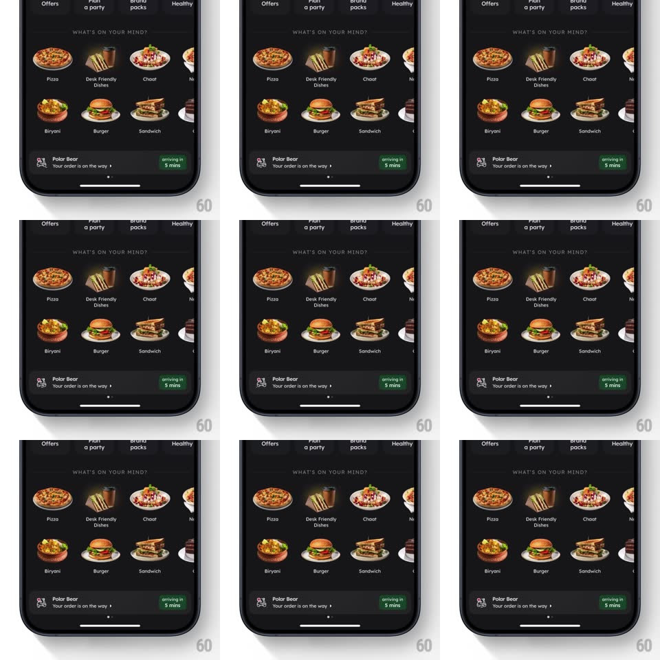

Media
Frame-by-frame

Rebuild this interaction 1:1: Zomato's live-order bar - the pinned status bar at the bottom of the home feed carries a tiny looping animation of a rider on a scooter next to "Your order is on the way" and the green "arriving in 5 mins" chip.

Rebuild this interaction 1:1: Zomato's live-order bar - the pinned status bar at the bottom of the home feed carries a tiny looping animation of a rider on a scooter next to "Your order is on the way" and the green "arriving in 5 mins" chip.
## Integration
Integration: stack-agnostic spec - springs given as stiffness/damping, timed motions as duration + curve; map every value to your framework and animation library of choice.
## Scene
The dark Zomato home ("WHAT'S ON YOUR MIND?" craving grid - Pizza, Desk Friendly Dishes, Chaat, Biryani, Burger, Sandwich tiles). Pinned at the bottom: the live-order bar - left icon slot with the animated rider, "Polar Bear" restaurant name, "Your order is on the way >" line, and a green "arriving in 5 mins" chip at the right.
## Motion spec
Pattern: looping mascot commute.
- The rider icon loops in place: wheels spin continuously, the scooter body bobs (translateY +/- 2pt, 700ms) as if over bumps, and the rider's body sways slightly with it; a faint motion line or dust puff cycles behind the rear wheel.
- Every ~4s the scooter does a tiny wheelie hop (front lifts 6deg, settles with a spring ~400/18).
- The bar itself slides up into view when the order goes active (spring ~360/22, 350ms) over the feed's bottom edge.
- The ETA chip updates with a quick text roll when minutes change.
- Tapping the bar expands the tracking sheet - the rider icon grows and cross-fades into the map view's courier marker.
## Calibration
- The loop is tiny (icon slot ~36pt) - motion must read at small size: big wheel spin, simple bob.
- The loop runs only while the bar is on screen and the order is active.
## Reduced motion
Static rider icon; ETA text updates without roll.
## Don't miss
- The rider faces right - direction of travel, toward the ETA chip.
- The bar floats over the feed with a soft top shadow, pinned above the home indicator.